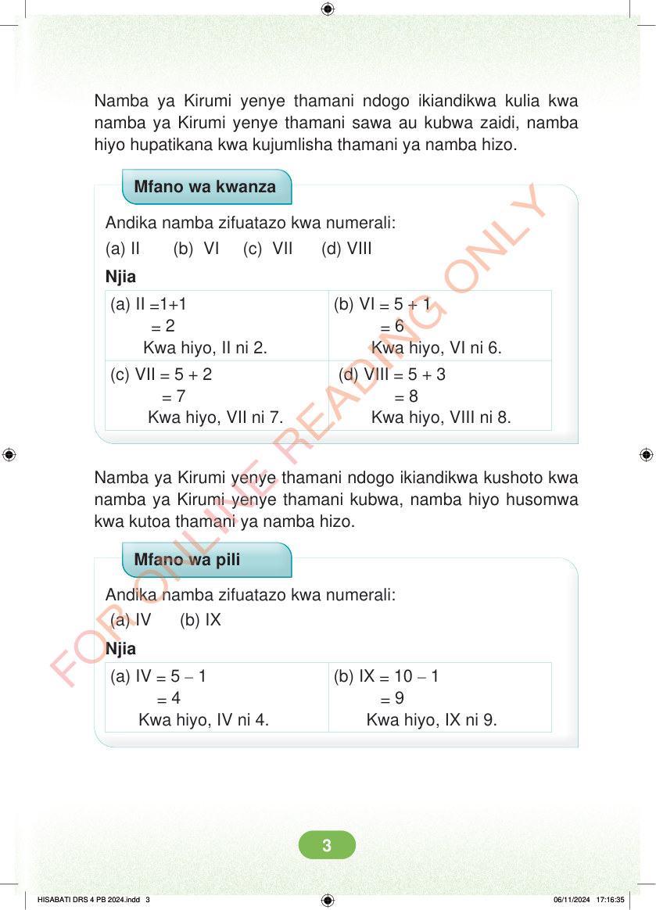

Namba ya Kirumi yenye thamani ndogo ikiandikwa kulia kwa namba ya Kirumi yenye thamani sawa au kubwa zaidi, namba hiyo hupatikana kwa kujumlisha thamani ya namba hizo. Mfano wa kwanza Andika namba zifuatazo kwa numerali: (a) II (b) VI (c) VII (d) VIII Njia (a) II =1+1 = 2 Kwa hiyo, II ni 2. (b) VI = 5 + 1 = 6 Kwa hiyo, VI ni 6. (c) VII = 5 + 2 = 7 Kwa hiyo, VII ni 7. (d) VIII = 5 + 3 = 8 Kwa hiyo, VIII ni 8. Namba ya Kirumi yenye thamani ndogo ikiandikwa kushoto kwa namba ya Kirumi yenye thamani kubwa, namba hiyo husomwa kwa kutoa thamani ya namba hizo. Mfano wa pili Andika namba zifuatazo kwa numerali: (a) IV (b) IX Njia (a) IV = 5 – 1 = 4 Kwa hiyo, IV ni 4. (b) IX = 10 – 1 = 9 Kwa hiyo, IX ni 9. HISABATI DRS 4 PB 2024.indd 3 HISABATI DRS 4 PB 2024.indd 3 06/11/2024 17:16:35 06/11/2024 17:16:35